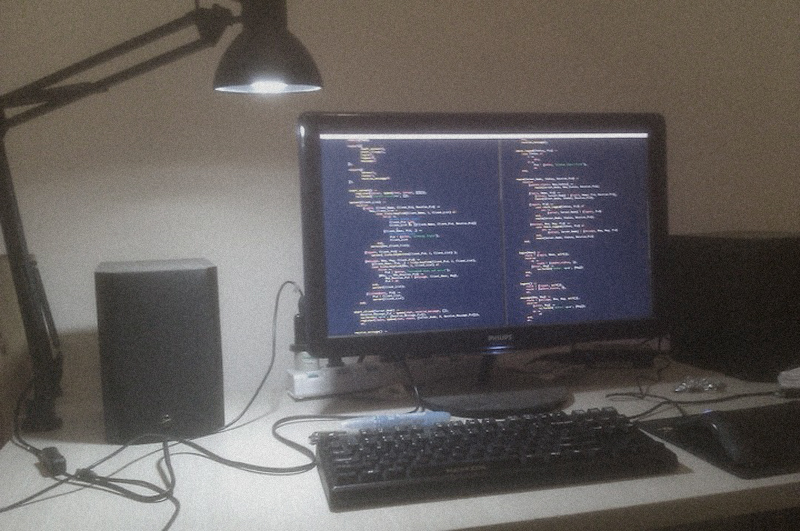

Linux, Python, Erlang是我的爱好，工具和工作
| social-oauth | 这是一个Python的OAuth2基础库，支持国内9大开放了OAuth2授权的网站 |
| django-siteuser | 一个django reusable app。集成了用户注册，登陆，上传头像，修改密码，重置密码，第三方登陆功能 （依赖于上面的social-oauth项目） |
| seven-cow | 比官方更简单易用的七牛云存储Python SDK |
| daemonize | 可以将Python程序在*nix系统daemon化的装饰器工具 |
| paper | 自己博客程序，基于bottle, jinja2, sqlalchemy |
| weiyouxi | 新浪微游戏Python SDK。 （无维护，年久失修） |
| vim-alignment | 一个vim快速对其插件 |
| make-proxy | 你懂得 |
| codebattle | AI对战项目 (server用Erlang实现，client用Unity3d实现，AI可以用任何具有google protobuf库的语言) |
| Github | https://github.com/yueyoum |
| StackOverflow | http://stackoverflow.com/users/1624752/yueyoum |
| Blog | http://codeshift.org/ |
| Tel | 18681229367 |
| yueyoum(at)gmail.com |